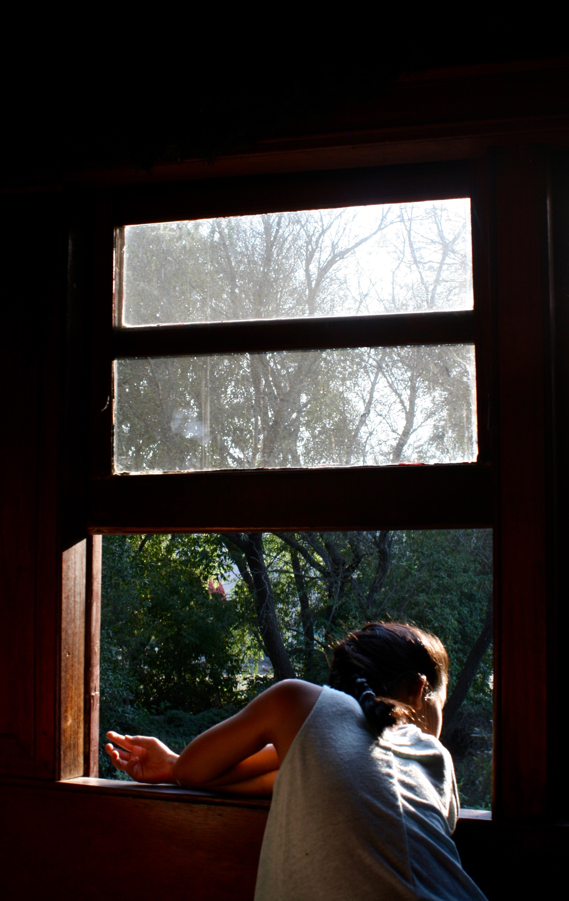
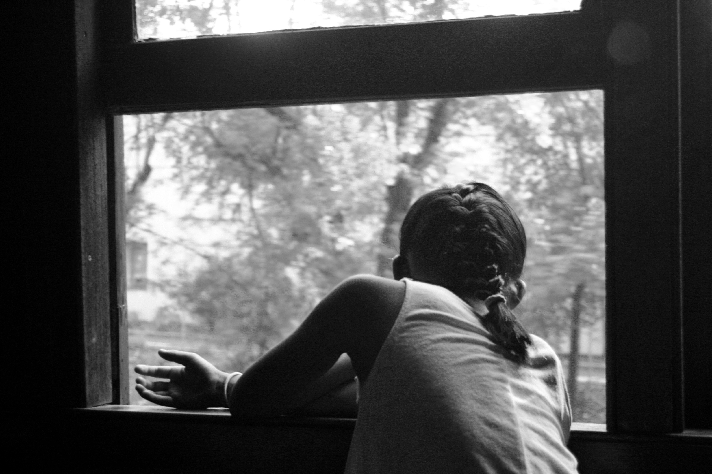

Take a photo that shows a light and dark scheme, and incorporate a model / portrait format.
In this picture I played on high contrast in photography, as we can see. Because of how the window surroundings are dark, that highlights the girl and the scenery in the background, and turns the viewer’s eyes to the center of the photo. Windows often portray an easy light / dark contrast, and just with some lightness adjustment much can be done. This was taken on a moving train, and the fact that the girl is looking outside and the slightly blurry forest background portrays this; this overall gives the picture a more animated and lively feel. I also wanted to capture the warm yet bright sunlight during that time of day, and it’s seen well through the windows (which contrast form the inside of the room) as well as how the light bounces off of the girl’s back. Overall, there are also only about 5 colors in this entire picture--green, black, brown, white, and yellow--which creates an overall simple and warm feeling to this picture.
 